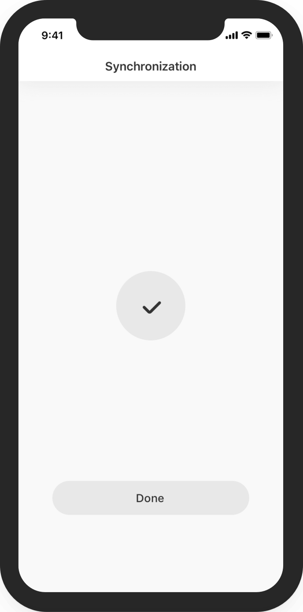
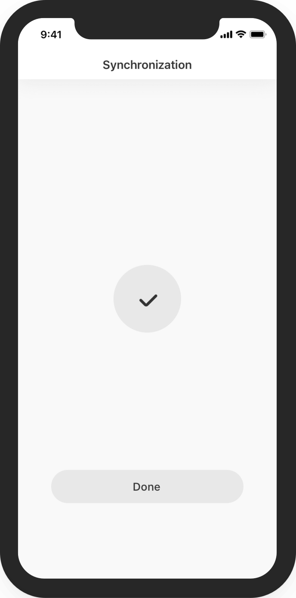

My name is Anton Vronskii.
I am an engineer with extensive product management experience.
Traditional résumé (LinkedIn) doesn't do the best job to represent who I am, what I can and what I like to do the most. The collection of my favorite fun little projects below augments the résumé to mitigate that.
Hi
Offline sync
In our little money tracking iOS app I wanted to explore the possibility of tracking spendings together with a partner but without sending your data to any servers. The approach I pursued is a peer-to-peer sync over bluetooth. It was interesting to see how it works from technical perspective (both networking and sync logic), how to explain the workflow to a user and how the approach enables regular family discussions on financial topics.
 

Hacking hacking in Cyberpunk
Cyberpunk 2077 brought memorable experiences and hacking puzzles were one of them. First 10 times. Then it became a burden which I decided to automate using computer vision and great computational power of modern mobile devices. "Point camera and get a solution in a second" approach allowed me to explore how to work with computer vision and solution presentation. And I couldn't miss an opportunity to hack hacking in Cyberpunk!